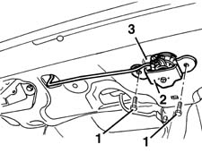

7015B36 lock block-r r
- Path
- Procedures > 70 FITTINGS > 7015 TAILGATE/FLAP > 7015B TAILGATE LOCKING/OPENING DEVICES > 7015B36 lock block-r r
- Kind
- repair procedure (removal / refitting; the operation number is the code)
- Applies to
- all engines; all production periods
- Interactive page
- https://sloeber94.github.io/elrnDB-fMltpl/en/#/2892123
Applies to: all engines; all production periods
 Removing
Removing
 Refitting
Refitting7015A04 tailgate interior panel - r+r .
1. Undo the bolts.
2. Move the lock over slightly.
3. Disconnect the linkage.

Applies to: all engines; all production periods
Applies to: all engines; all production periods
Refitting
Removing7015B34 lock block - r+r with handle or support removed
Connect the linkage.
Fit the lock and tighten its bolts.
Check that the barrel and the lock control mechanism are working properly.